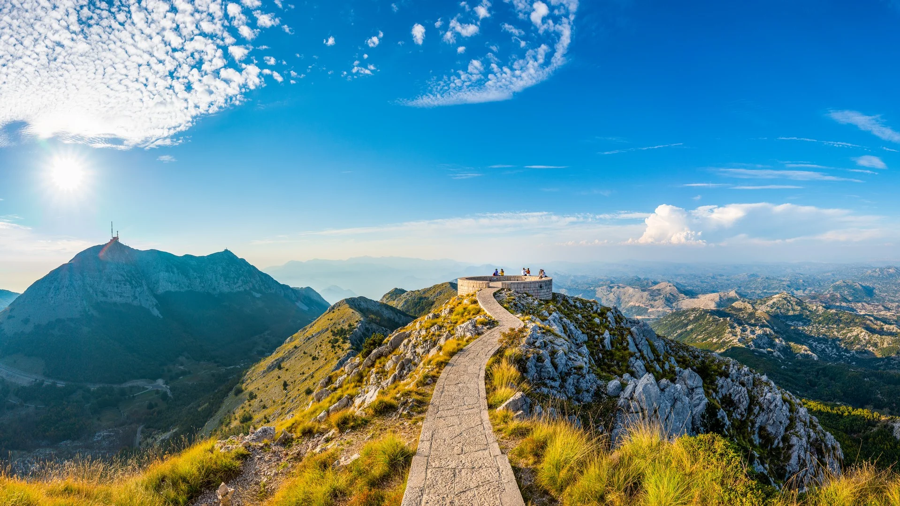

Cetinje i Lovćen
Cetinje, kulturna prestonica Crne Gore, bogato muzejima i istorijom. Planina Lovćen, sa mauzolejom Petra II Petrovića Njegoša, pruža neverovatne panorame.
Crna Gora, kao zemlja bogata istorijskim i kulturnim nasleđem, živopisnim predelima na moru, a svakako i na našim planinama, katunima, kanjonima, te izvanrednoj gastronomiji, kao i sa 5 nacionalnih parkova, pruža mogućnosti odmora i uživanja. Mi stojimo na usluzi da vam dočaramo sve naše lepote. Organizujemo individualne i grupne ekskurzije, pešačke ture i biciklističke ture na mestima gde će vas retko ko povesti.
Cetinje, kulturna prestonica Crne Gore, bogato muzejima i istorijom. Planina Lovćen, sa mauzolejom Petra II Petrovića Njegoša, pruža neverovatne panorame.
Jedan od najlepših zaliva na Jadranskom moru. Vode zaliva su okružene planinama, a stari gradovi Kotor i Perast nude srednjovekovnu atmosferu i jedinstvene poglede. Ovde možete posetiti tvrđave i stare katedrale.
Manastir Ostrog, urezan u stenu na visini od 900 metara, jedno je od najposećenijih pravoslavnih svetilišta u regionu.
Poznat po planinama, ledničkim jezerima i dubokim kanjonima. Kanjon reke Tare, drugi najdublji na svetu, nudi staze za pešačenje i rafting.
Smješten u srcu kulturne prestonice Crne Gore, Cetinju, ovaj manastir, podignut 1484. godine, predstavlja važan istorijski i duhovni centar Crnogorske pravoslavne crkve.
Osnovan 1252. godine, Manastir Morača okružen je prelepim prirodnim pejzažima, a svojom bogatom istorijom čini značajno duhovno utočište Crne Gore.